The 2016 Korean-Japanese Student Workshop
11月24日から26日にかけての3日間、広島大学と韓国の釜山大学の学生らによる日韓Workshopが開催されました。
本研究室からはM1の後藤一希、吉川智己、宮下剛夫の３名が参加し、開催地である広島大学東広島キャンパスにて、英語での口頭発表を行いました。
１日目は釜山大学の学生のお出迎えおよび交流を兼ねた食事会を行いました。
ここでは難しい研究の話は置いといて、お互いの国の食べ物や流行の話が中心で、すっかり打ち解けることが出来ました。
２日目はいよいよ発表本番です。
発表の練習会を何度も重ねてきたため、各自存分に成果を報告出来たと思います。
その甲斐あってか、M1の後藤くんがBest Presentation Award を受賞しました！
後藤一希 (口頭発表)
３日目は日韓の学生で、広島の観光名所である縮景園、原爆ドーム、宮島を訪れました。"Development of VUV-laser based sub meV Resolution Angleresolved
Photoemission Microscopy System
"
吉川智己 (口頭発表)"Surface photovoltaic effect in the topological insulator Bi2Te3
"
宮下剛夫 (口頭発表)"High-Resolution Angle-Resolved Photoemission Study of Cosubstitution
Effect in High-TC Cuprate Superconductor"
別の言語を話す同世代との交流は、日本というせまい島国に暮らす僕らにとってとても良い機会になったと思います。
来年の参加者にも是非盛り上げて頂きたいと思います。
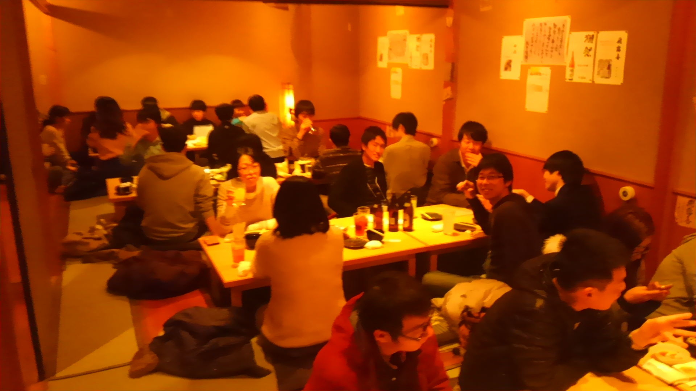
日韓学生初顔合わせ＠てしお
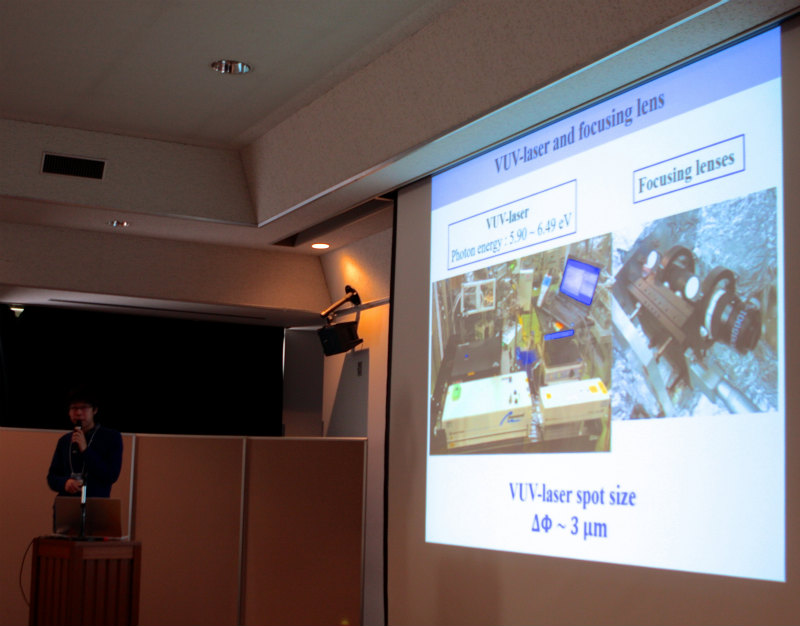発表風景（M1後藤一希くん）
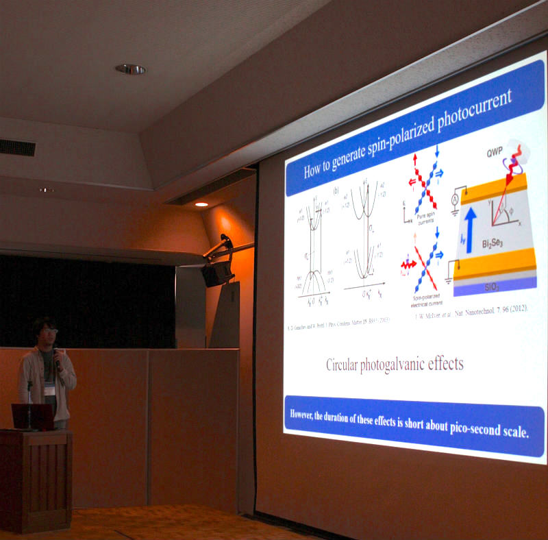発表風景（M1吉川智己くん）
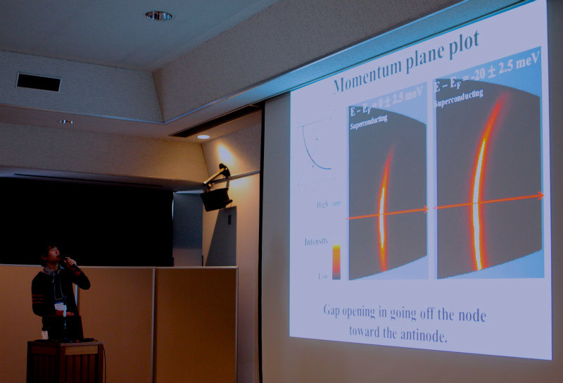発表風景（M1宮下剛夫）
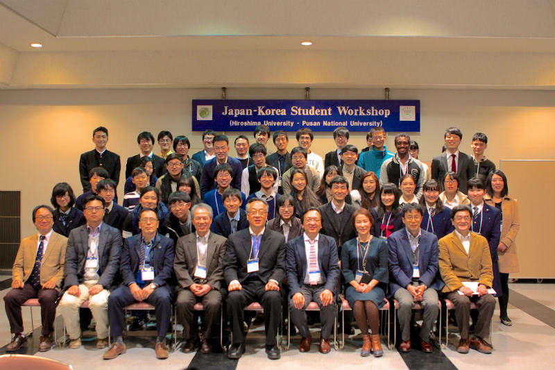発表会直後に取られた全員の集合写真＠広島大学東広島キャンパス
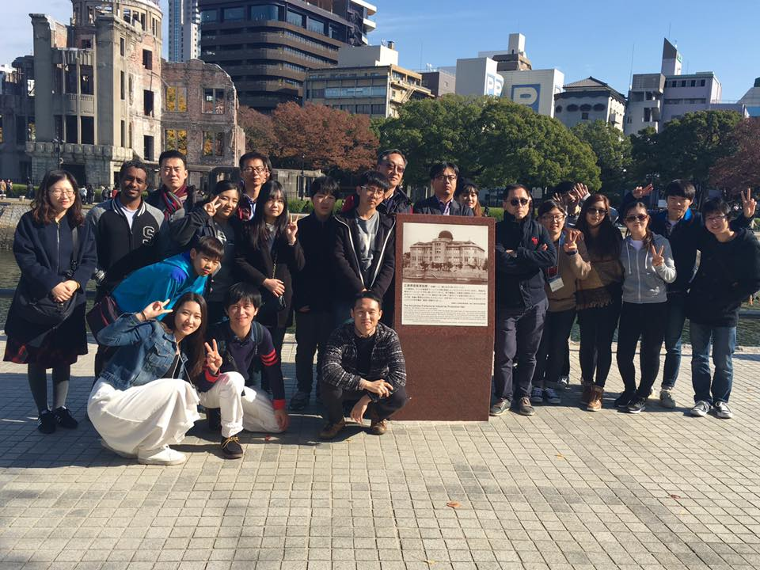遠足参加者の集合写真＠原爆ドーム
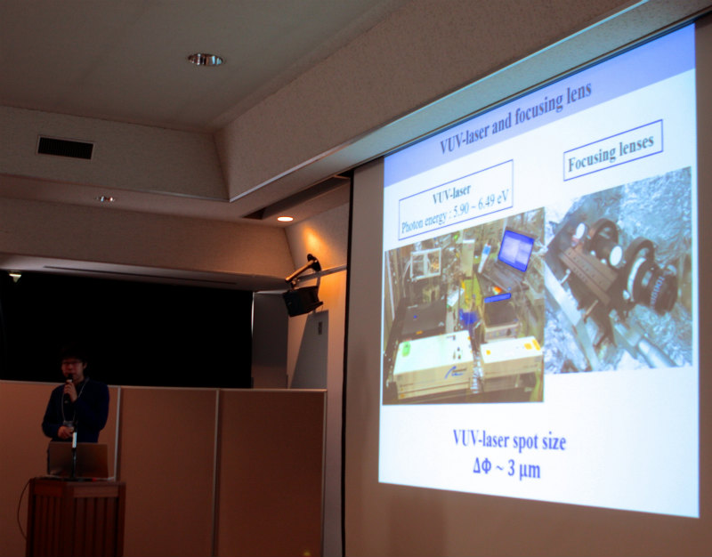
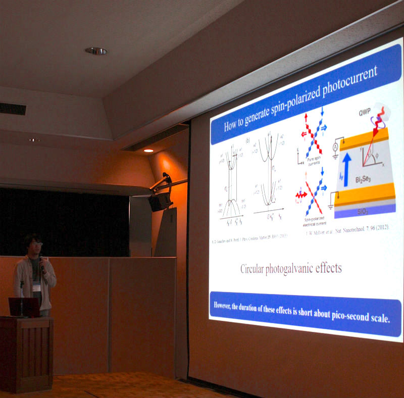
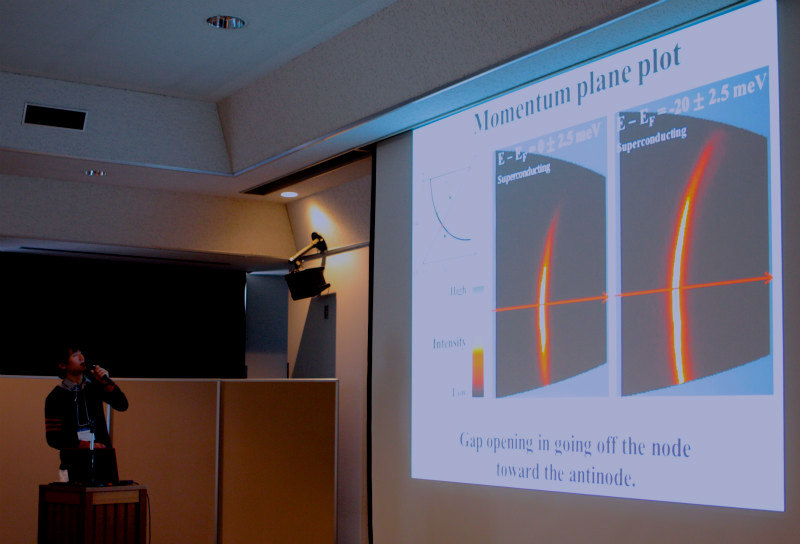
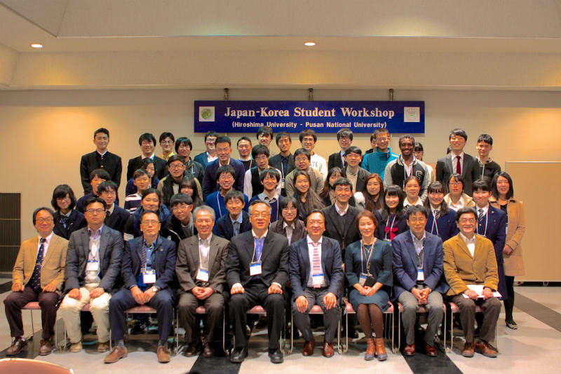
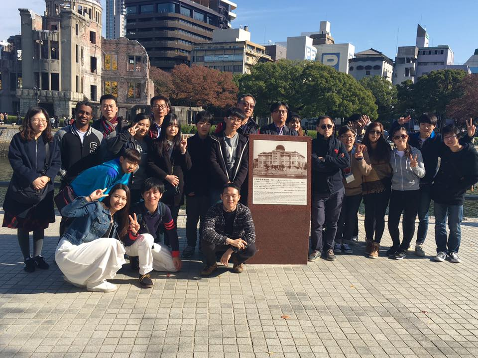